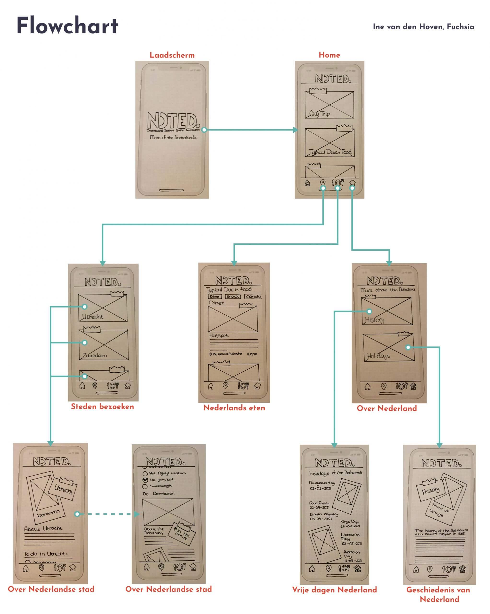

De opdracht
De opdracht was het ontwerpen en bouwen van een app met HTML & CSS die internationale studenten zou helpen, om hun weg te vinden in Nederland. Ik heb ervoor gekozen om een app te maken waar de internationale verschillende dingen over Nederland leert. Zo kun je verschillende steden in de app vinden die de student zou kunnen gaan bezoeken, ook kan de student typisch Nederlands eten in de app vinden en te weten komen wanneer welke feestdag is en een stukje over de geschiedenis.
